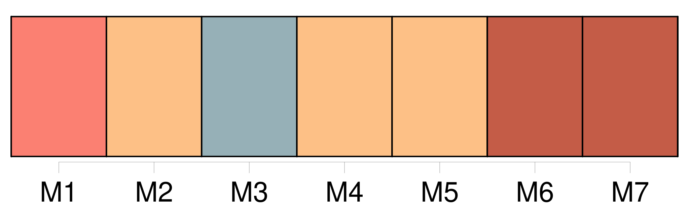
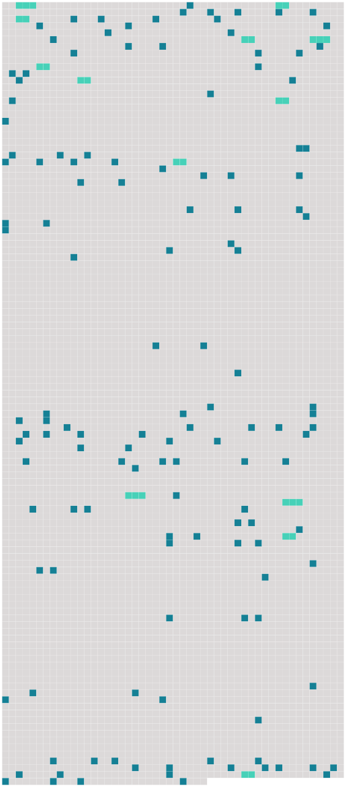

Longueur nb maillons : 147 mentions |
  |
C'était [un garçon maigre] , avec de gros os, une grosse tête, barbu, le nez très-fin, les yeux minces et clairs. [Il] portait un chapeau de feutre noir, roussi, déformé, et [se boutonnait] au fond d'un immense paletot, jadis marron tendre, que les pluies avaient déteint en larges traînées verdâtres.
Un peu courbé, agité d'un frisson d'inquiétude nerveuse qui devait [lui] être habituel, [il] restait planté dans [ses] gros souliers lacés ; et [son] pantalon trop court montrait [ses] bas bleus. — Bonjour, [monsieur Claude] , répondit gaiement la maraîchère.
[Vous] savez, je [vous] ai attendu, lundi ; et comme [vous] n'êtes pas venu, j'ai garé [votre] toile ; je l'ai accrochée à un clou, dans ma chambre. — Vous êtes trop bonne, madame François, [j'] irai terminer mon étude, un de ces jours …… Lundi, [je] n'ai pas pu …… [2 phrases] — C'est que, voyez -vous, [je] le mettrai dans un coin du tableau. [1 phrases] [J'] ai réfléchi à ça toute la semaine …… [2 phrases]
[Je] suis descendu de bonne heure, me doutant qu'il y aurait un lever de soleil superbe sur ces gredins de choux. [Il] montrait du geste toute la longueur du carreau. [2 phrases]
À bientôt, [monsieur Claude] !
Et comme elle partait, présentant Florent [au jeune peintre] : Il ne se reconnaît plus dans [votre] gueux de Paris.
[Vous] pourriez peut-être lui donner un bon renseignement. [1 phrases] [Claude] regardait Florent avec intérêt ; cette longue figure, mince et flottante, [lui] semblait originale.
La présentation de madame François suffisait ; et, avec la familiarité d'un flâneur habitué à toutes les rencontres de hasard, [il] lui dit tranquillement : [4 phrases] — Mais oui, dit [le peintre] [2 phrases] [J'] en ai fait une eau-forte pas trop mauvaise. Quand vous viendrez chez [moi] , [je] vous la montrerai …… [2 phrases]
Toute sa méfiance se réveillait devant l'insistance de [Claude] — Ça ne fait rien, dit [celui -ci] , allons tout de même rue Pirouette. [2 phrases] Il dut [le] suivre. [3 phrases]
[Claude] s'était arrêté, en poussant de petits cris d'admiration. Puis, en face, rue Pirouette, [il] montra, expliqua chaque maison. [1 phrases] Les maisons, tassées, renflées, avançaient leurs auvents comme « des ventres de femme grosse, » selon l'expression [du peintre] , penchaient leurs pignons en arrière, s'appuyaient aux épaules les unes des autres. [2 phrases] Puis la file bossuée des autres s'en allait, s'enfonçant en plein noir, lézardée, verdie par les écoulements des pluies, dans une débandade de couleurs et d'attitudes telle, que [Claude] en riait d'aise. [9 phrases]
mademoiselle Saget est matinale, dit [Claude] [qui] avait levé la tête.
Et [il] ajouta, en se tournant vers [son] compagnon : [3 phrases] Florent allait [le] questionner, mais il [le] trouva inquiétant, dans [son] grand paletot déteint ; il [le] suivit, sans mot dire, tandis que [l'autre] lui parlait des Méhudin. [1 phrases] Et [il] en vint à dire, en se fâchant, que Murillo peignait comme un polisson. [2 phrases]
Allons où [vous] voudrez. Comme [il] sortait de la rue Pirouette, une voix appela [Claude] , du fond de la boutique d'un marchand de vin, qui faisait le coin. [Claude] entra, traînant Florent à [sa] suite. [8 phrases]
demanda [Claude] à Florent. En entrant, [il] avait serré la main de l'homme qui [l'] invitait. [1 phrases] [Claude] l'appelait Alexandre, lui [tapait] sur les bras, lui [demandait] quand ils iraient à Charentonneau. [3 phrases]
répéta [Claude] [7 phrases] — Un bon garçon, cet Alexandre, dit [Claude] , quand ils se retrouvèrent tous les deux sur le trottoir de la rue Rambuteau. Il est très amusant à la campagne ; il fait des tours de force ; puis, il est superbe, le gredin ; [je] l'ai vu nu, et s'il voulait [me] poser des académies, en plein air …… [1 phrases] Florent [le] suivait, s'abandonnait. [19 phrases] [Claude] était ravi de ce tumulte ; [il] s'oubliait à un effet de lumière, à un groupe de blouses, au déchargement d'une voiture. [7 phrases] [Claude] et Florent revinrent sur leurs pas, flânant, s'attardant au milieu des fleurs. [6 phrases]
— C'est Cendrillon qui rentre sans pantoufles, dit [Claude] avec un sourire. [1 phrases] [Claude] , les mains dans les poches, sifflant, racontait [son] grand amour pour ce débordement de nourriture, qui monte au beau milieu de Paris, chaque matin. [Il] rôdait sur le carreau des nuits entières, rêvant des natures mortes colossales, des tableaux extraordinaires. [Il] en avait même commencé un ; [il] avait fait poser [son] ami Marjolin et cette gueuse de Cadine ; mais c'était dur, c'était trop beau, ces diables de légumes, et les fruits, et les poissons, et la viande!! [1 phrases] Et il était évident que [Claude] , en ce moment -là, ne songeait même pas que ces belles choses se mangeaient. [Il] les aimait pour leur couleur.
Brusquement, [il] se tut, [serra] d'un mouvement qui [lui] était habituel la longue ceinture rouge qu' [il] portait sous [son] paletot verdâtre, et [reprit] d'un air fin : Quelquefois, quand [j'] oublie de dîner, la veille, [je] me donne une indigestion, le lendemain, à regarder arriver toutes sortes de bonnes choses. Ces matins -là, [j'] ai encore plus de tendresses pour [mes] légumes …… [1 phrases] [Il] raconta un souper qu'un ami [lui] avait payé chez Baratte, un jour de splendeur ; ils avaient eu des huîtres, du poisson, du gibier. [2 phrases] Et Florent ne savait plus s' [il] condamnait le côté pittoresque ou la bonne chère de Baratte. Puis, [Claude] déblatéra contre le romantisme ; [il] préférait [ses] tas de choux aux guenilles du moyen âge. [Il] finit par s'accuser de [son] eau-forte de la rue Pirouette comme d'une faiblesse. [1 phrases] — Tenez, dit [-il] en s'arrêtant, regardez, au coin du trottoir. [6 phrases] Et [le peintre ravi] clignait les yeux, [cherchait] le point de vue, afin de composer le tableau dans un bon ensemble. [2 phrases]
Alors, comme la femme servait un nouvel arrivé, [Claude lui -même] fut attendri par la vapeur forte d'une cuillerée qu' [il] reçut en plein visage.
[Il] serra [sa] ceinture, souriant, fâché ; puis, se remettant à marcher, faisant allusion au verre de punch d'Alexandre, [il] dit à Florent d'une voix un peu basse : [3 phrases] [Claude] , [qui] s'était penché au-dessus de certains regards, garnis de grilles, s'ouvrant, au ras du trottoir, sur des profondeurs de cave où brûlaient des lueurs louches de gaz, regardait en l'air maintenant, entre les hauts piliers, cherchant sur les toits bleuis, au bord du ciel clair. [Il] finit par s'arrêter encore, les yeux levés sur une des minces échelles de fer qui relient les deux étages de toiture et permettent de les parcourir.
Florent [lui] demanda ce qu' [il] voyait là-haut. — C'est ce diable de Marjolin, dit [le peintre] sans répondre. [1 phrases]
[J'] ai besoin de lui pour une étude. Et [il] raconta que [son] ami Marjolin fut trouvé, un matin, par une marchande, dans un tas de choux, et qu'il poussa sur le carreau, librement. [4 phrases] [Claude] , tout en causant, hâtait le pas. [Il] ramena [son] compagnon à la pointe Saint-Eustache. [4 phrases] Mais [Claude] lui montra, de l'autre côté du banc, le marché aux aromates. [7 phrases] Mais [Claude] était monté debout sur le banc, d'enthousiasme. [Il] força [son] compagnon à admirer le jour se levant sur les légumes. [10 phrases] [Claude] battait des mains, à ce spectacle. [Il] trouvait « ces gredins de légumes » extravagants, fous, sublimes. Et [il] soutenait qu'ils n'étaient pas morts, qu'arrachés de la veille, ils attendaient le soleil du lendemain pour lui dire adieu sur le pavé des Halles. [Il] les voyait vivre, ouvrir leurs feuilles, comme s'ils eussent encore les pieds tranquilles et chauds dans le fumier. [Il] disait entendre là le râle de tous les potagers de la banlieue. [7 phrases]
— C'est crânement beau tout de même, murmurait [Claude] en extase. [10 phrases] [Claude] n'était pas descendu de [son] banc. [Il] se grandissait, pour voir jusqu'au fond des rues.
Brusquement, [il] aperçut, dans la foule qu' [il] dominait, une tête blonde aux larges cheveux, suivie d'une petite tête noire, toute crépue et ébouriffée. [4 phrases]
cria-t [-il] Et, comme [sa] voix se perdait au milieu du brouhaha, [il] sauta à terre, [il] prit [sa] course.
Puis, [il] songea qu' [il] oubliait Florent ; [il] revint d'un saut ; [il] dit rapidement : [Mon] nom est écrit à la craie sur la porte, [Claude Lantier] …… [1 phrases] [Il] disparut. [Il] ignorait le nom de Florent ; [il] le quittait comme [il] l'avait pris, au bord d'un trottoir, après lui avoir expliqué [ses] préférences artistiques. |
 |
La ressource peut être téléchargée sur la page Ortolang
Si vous avez des questions ou vous voyez des erreurs, merci d'envoyer un mail à silvia.federzoni89@gmail.com
Site développé par S. Federzoni (contact)